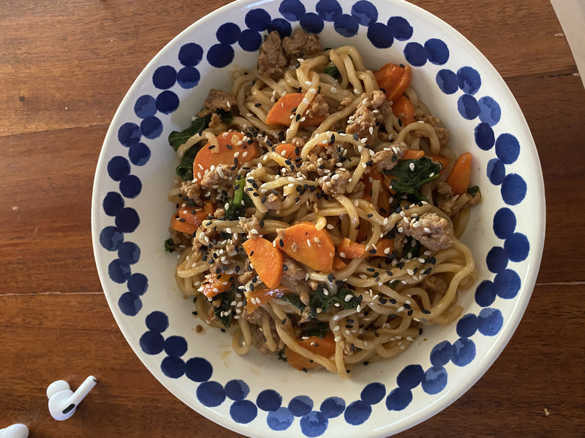

One-Pan Spicy Pork Udon

Description
Chefs! We're bringing you a series of recipes designed with ease of cooking and cleanup in mind, but without sacrificing the incredible flavors you’ve come to expect from a classic Blue Apron meal. To elevate this dish, we’re highlighting fresh, chewy udon noodles by tossing them with a sweet and savory sauce of cumin-Sichuan peppercorn sauce, soy glaze, and more that perfectly complements the richness of the pork. It’s all stirred together with tender, sautéed bites of spinach and carrots for satisfying crunch.
Ingredients
- 10 oz ground pork
- 1/2 lb fresh udon noodles
- 2 cloves garlic
- 3 oz baby spinach
- 6 oz carrots
- 1 tablespoon sherry vinegar
- 1 tablespoon sesame oil
- 1 teaspoon black and white sesame seeds
- 2 tablespoon soy glaze
- 3 tablespoons cumin and sichuan peppercorn sauce
- 2 teaspoons gochujang
Preperation
- Remove the noodles from the refrigerator to bring to room temperature. Wash and dry the fresh produce. Peel the carrots; halve lengthwise, then thinly slice crosswise. Peel and roughly chop 2 cloves of garlic. In a medium bowl, whisk together the cumin-Sichuan sauce, soy glaze, sesame oil, vinegar, 1/2 cup of water, and as much of the gochujang as you'd like, depending on how spicy you'd like the dish to be.
- In a large pan (nonstick, if you have one), heat 2 teaspoons of olive oil on medium-high until hot. Add the pork. Cook, without stirring, 3 to 4 minutes, or until lightly browned. Season with salt and pepper. Continue to cook, stirring frequently and breaking the meat apart with a spoon, 1 to 2 minutes, or until lightly browned.
- Add the sliced carrots and chopped garlic; season with salt and pepper. Cook, stirring occasionally, 3 to 4 minutes, or until the carrots are softened and the pork is cooked through.
- Meanwhile, using your hands, carefully separate the noodles. To the pan of cooked pork and carrots, add the noodles, spinach, and sauce (carefully, as the liquid may splatter). Season with salt and pepper. Cook, stirring frequently, 2 to 3 minutes, or until the spinach is wilted and the noodles are coated and heated through. Turn off the heat. Taste, then season with salt and pepper if desired. Serve the finished noodles garnished with the sesame seeds. Enjoy!
Private Notes
None